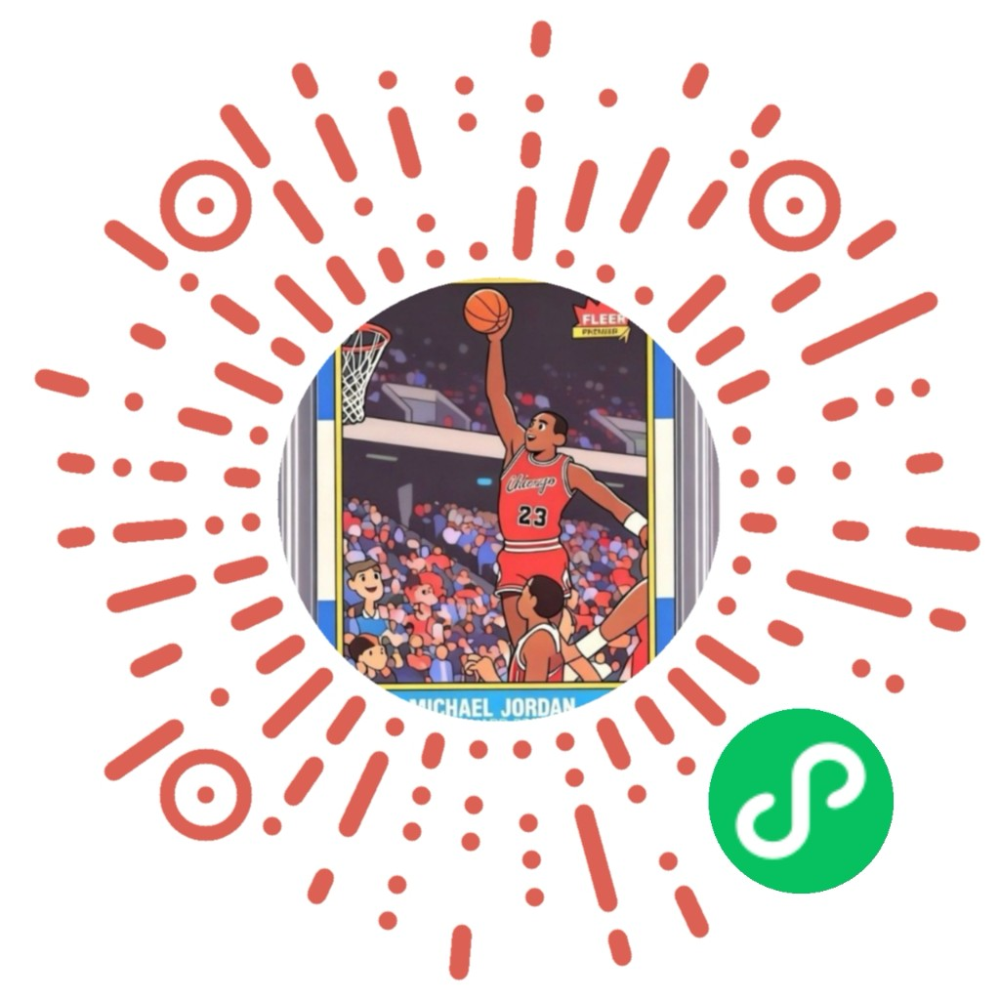

异常卡片资料库

记录重大瑕疵、低编素球衣、易被换 Patch 或签字处理的高改造风险卡，仅作公开状态留档和后续对比参考。
未找到相关资料
加载中...
换 Patch：同一张卡出现 Patch 不一致，或存在来源冲突记录。
签字异常：签字、笔迹、位置或来源存在可对比的异常线索。
假卡：版式、编号或公开图片对比存在明显异常；仅凭图片通常难以完全判断。
请仔细查看来源资料或者当前页面相关信息后再做判断，本网站不构成任何鉴定结论、交易建议或维权证据。